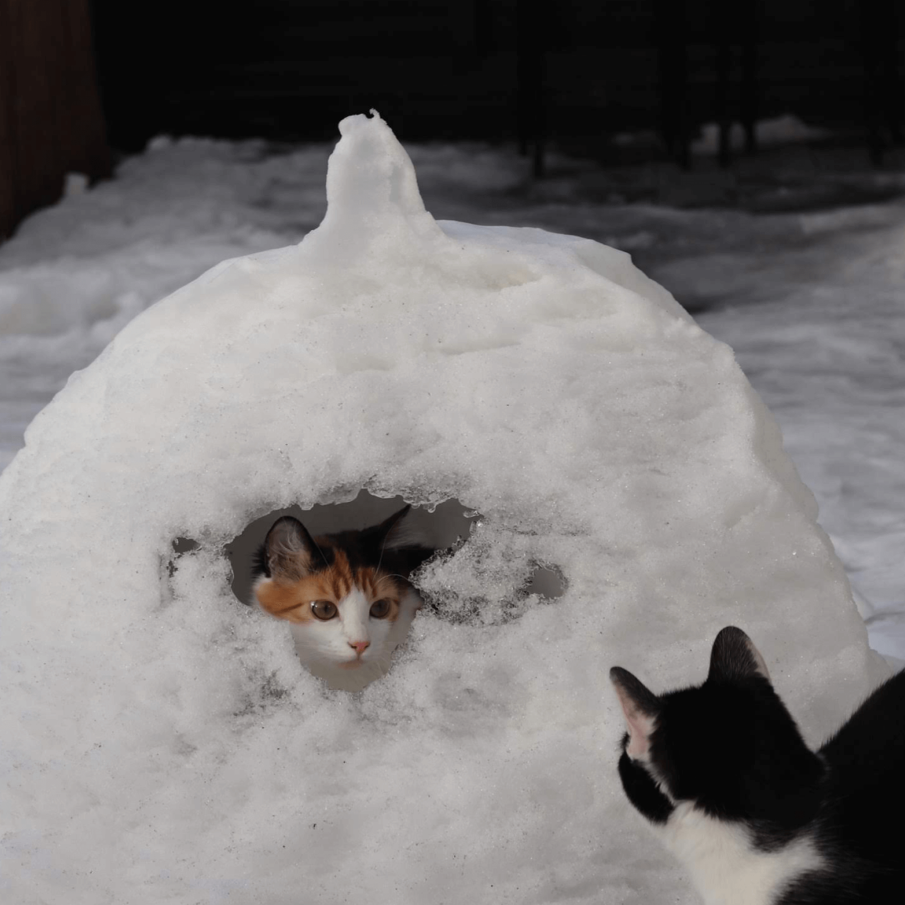
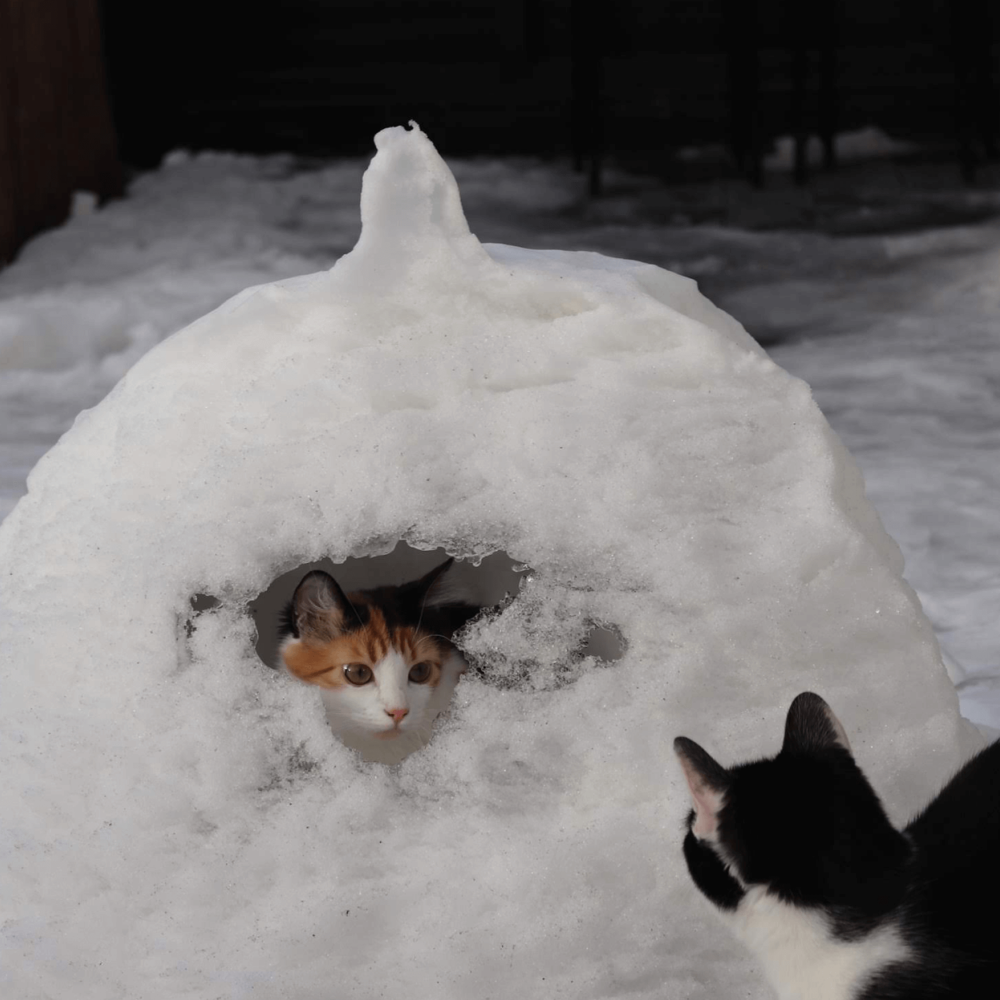
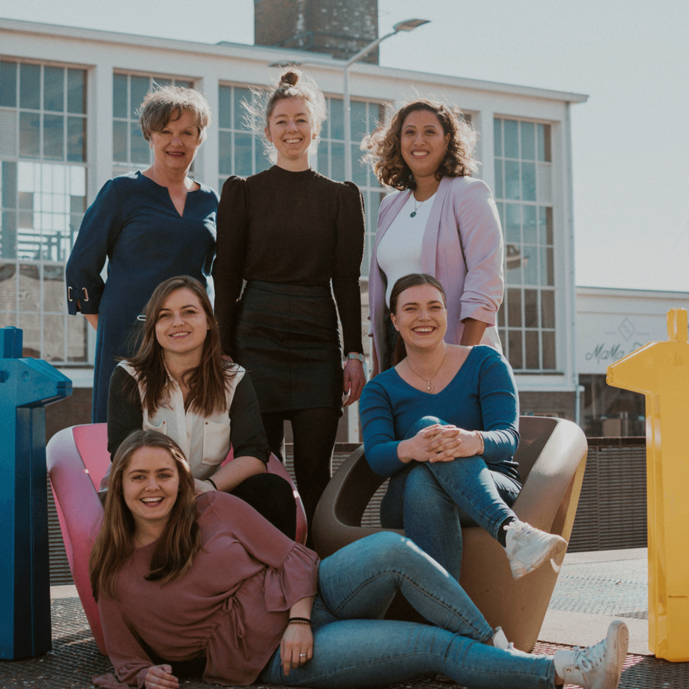
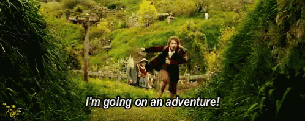

Hey! Leuk dat je meer over mij wil weten. Ik woon in Den Haag, samen met mijn vriend en twee katten, Kees en Chloë. In mijn vrije tijd ben ik vaak bezig met frustelen in het huis, want ik vind het leuk om creatief bezig te zijn.
en twee katten, Kees en Chloë. In mijn vrije tijd ben ik vaak bezig met frustelen in het huis, want ik vind het leuk om creatief bezig te zijn.
Naast mijn studie zet ik mij graag in voor mijn studievereniging en introductieweek van de faculteit
en introductieweek van de faculteit . Momenteel ben ik de voorzitter van de introductieweek, HaagUit. Door deze nevenactiviteiten heb ik veel mooie leermomenten mogen hebben en leer ik elke dag meer.
. Momenteel ben ik de voorzitter van de introductieweek, HaagUit. Door deze nevenactiviteiten heb ik veel mooie leermomenten mogen hebben en leer ik elke dag meer.
Afgelopen jaar heb ik de kans gekregen om stage te lopen bij het bedrijf DutchGiraffe. Nadat ik mijn stage had afgerond mocht ik hier blijven werken, zodat ik ervaring kon opbouwen. Hier heb ik nog beter leren werken met Figma en heb ik aan mooie projecten mogen werken.
In februari wil ik graag beginnen aan een nieuw avontuur, namelijk afstuderen! Ben je geïntresseerd in mij of in mijn werk en wil je meer weten? Neem gerust contact met mij op en wie weet drinken wij binnenkort een lekkere kop koffie!